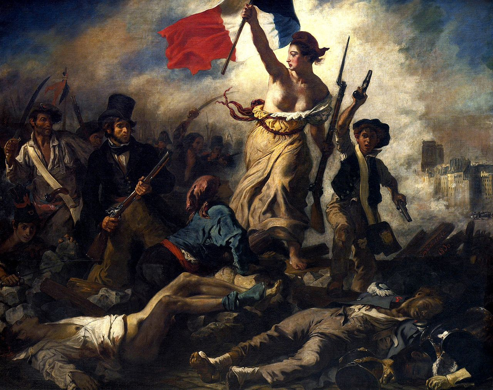

Nouvelle écrite pour le concours de nouvelles de l'INSA
Thème : (R)évolution
Classement : parmi les dix-huit nouvelles sélectionnées (sur quarante)
Mars 2016
Les lignes s’enchaînaient silencieusement, et pourtant, tout faisait sens. Les mots coulaient le long de la cascade des idées, chaque goute portant avec elle cette justesse pure. Oh mais il y avait bien cette lourdeur de l’histoire, qui avait terni l’ouvrage vierge. On pouvait penser à la noirceur rocailleuse que les grands diables y avaient encrée. Elle fleurissait de plus en plus à chaque page, et créait chez le lecteur averti ce léger goût amer – mais pas chez Max. Le poids de l’histoire, dans toute sa puissance, aurait pu effleurer le cœur du garçon. Les restes de famine, de camps, d’injustice… Mais ces souvenirs n’étaient pas les siens. Et ne le seraient jamais.
Max, confortablement installé dans son canapé, tourna une nouvelle page du « Manifeste du parti communiste », laissant couler quelques mots de plus dans sa cascade à idées. Partage, égalité, autour de ces termes d’une douce sonorité naissait son monde idéal. Et les lettres de l’auteur allemand s’incrustaient dans son cœur encore fragilisé. M. A. R. X. Et c’était la conscience de son frère qui lui chuchotait les phrases du traité. Une impression de calme. De grande sérénité. Il vivait dans la chute rassurante des idées.
« Ferme ce livre, Max, grogna Victoire. C’est la quatrième fois que tu le lis… »
Le concerné ignora simplement la remarque, comme à son habitude lorsqu’il savait pertinemment que le dialogue n’apporterait rien. Il continua de laisser ses yeux avaler les mots du grand homme. Sa petite sœur ne comprenait pas ça. Elle ne voyait pas le sens qui coulait si simplement. En opposition avec la mascarade qu’ils vivaient en ce moment. Les hommes politiques s’enchaînaient, les uns après les autres, et ces inégalités ne cessaient d’augmenter. Mais il ne blâmait pas l’un ou l’autre de ces personnages. Non, ils n’étaient que des marionnettes. Il fallait blâmer le système. La pieuvre invisible qui, de ses hideux tentacules, piégeait au hasard quelques êtres dans la misère.
Seize heures sonna sur l’horloge murale du salon. Max ferma rapidement son livre fétiche en aboyant quelques interjections. Il attrapa son manteau en vitesse, et s’apprêta à claquer la porte.
« Mais quelle mouche t’a piquée ? » demanda sa cadette.
Cette question stoppa le jeune homme dans son élan. Une réponse sincère aurait entraîné des heures de débat. Et il n’avait pas le temps ; il était déjà en retard. Il n’aimait pas mentir à sa sœur – mais au diable ses principes pour ce soir.
« Je devais aller travailler chez Joël, j’avais oublié. M’attendez pas pour manger ce soir, bisous ! »
Et il quitta la maison familiale aussi vite que possible, ne laissant pas le doute effleurer l’esprit de Victoire. Il traversa plusieurs rues à la hâte, sous le soleil glacial des après-midi hivernales.
« Désolé pour le retard », lança-t-il en arrivant sur les lieux de la rencontre, un petit bar calme du centre-ville.
Six regards se tournèrent vers Max. Les hommes qui l’attendaient avaient tous environ vingt-cinq ans, portaient un minimum de barbe – à croire que c’était nécessaire dans le milieu -, et gardaient une figure grave. L’adolescent, du haut de ses seize étés, fut pris d’une lourde vague de timidité. Les raisons qui l’avaient porté jusqu’ici semblaient fuir à grands pas, et lui criaient d’en faire de même.
« - Installe-toi avec nous, proposa le plus grand des six, qui devait se prénommer Henri selon les souvenirs de Max. - C’est dingue ce que tu lui ressembles, ajouta le blond assis sur le côté. »
« Lui. » Même ses meilleurs amis n’osaient plus prononcer son nom. Il fallait avouer que sa mort était récente. Et avait été un terrible choc pour tous.
Son frère, Damien, aimait militer pour ses idées. Il participait à toutes les manifestations sous ses couleurs rouges, clamait l’entraide et crachait sur le système. Après les cours, il courrait retrouver son groupe d’amis – tous présents aujourd’hui – et débattait durant des heures sur la dernière idée farfelue du gouvernement. Alors il s’engageait de plus en plus, sous le drapeau rouge flamboyant du communisme. Il passait peu de temps à la maison, avec Max et sa petite sœur. Mais le temps qu’il leur offrait était précieux. Comme une perle de pluie dans un désert aride, il avait laissé tomber le petit livre de Marx dans les mains de son jeune frère en lui conseillant de le lire. « Ca, Max, c’est un petit régal. Le livre de recettes du plus grand cuisinier à idées ! » Une semaine après, sans crier gare, il était mort. Heurté par une brique mal lancée lors d’une manifestation un peu plus violente que les autres. Le projectile visait les forces de l’ordre, l’auteur était maladroit. Homicide involontaire. Et un frère disparu.
Un an et quelques semaines plus tard, ils étaient réunis, tous les sept, ne sachant que dire, portant leur air triste des grands jours. C’était l’initiative de Max, d’organiser ce rassemblement. Il voulait voir à quoi ressemblaient ces soirées que son aîné appréciait tant. Il avait envoyé un message à Henri, Timothée, Guillaume, et le reste de la bande – c’était pas facile pour lui de mettre des prénoms sur ces nouveaux visages -, non sans timidité. Une petite boule s’était formée dans son ventre lorsqu’il avait appuyé sur le bouton Envoyer. Ils auraient pu lui répondre : « Tu te prends pour qui ? Tu n’es pas Damien, bon sang. » Cela aurait été légitime, il arrivait devant ces six barbus philosophes, comme six chevaliers autour de la table ronde – lui qui n’avait jamais porté une épée. Et il leur demandait quoi ? Une démonstration ? Mais ce n’était pas le cirque ici, mon grand !
Et pourtant, ils avaient tous accepté. Sûrement un hommage à leur ami parti trop tôt. Aidons le petit frère en signe d’au-revoir à Damien. Cela se tenait.
Un silence de plomb régnait dans le petit bar. La gêne et le deuil le protégeaient, tels des chiens de garde surveillant le jardin de leur maître bien aimé. Ils auraient été prêts à mordre pour empêcher le dialogue entre les sept jeunes. Deuil, grand berger allemand fier et robuste ; Gêne, petit rottweiler teigneux, formant à eux deux une équipe incroyable de protection des non-dits. Les regards des sept hommes oscillaient entre leurs pieds et le bois de la table qui les accueillait.
Heureusement, les idées finirent par voler plus haut que les chiens ; et Guillaume les contourna héroïquement.
« Mais tu n’es pas venu pour parler de ton frère, hein ? commença-t-il en s’adressant à Max. Je crois qu’on devrait reprendre nos vieux débats, comme tu l’avais proposé. Quelqu’un se lance ? »
Son sourire accueillant rassura ses compagnons, et l’un d’entre eux – dans un élan de témérité – lança une phrase emplie de polémique, portant sur la dernière actualité politique. Un second répondit, allumant la flamme des philosophes qui s’était endormie trop longtemps en eux. Et le débat naissait devant les yeux ébahis de Max.
Il prit vie et s’éteignit comme il avait débuté, vers vingt heures, lorsque les six amis furent fatigués. Le jeune adolescent n’avait pas osé parler et ainsi interrompre les discussions folles des camarades de son aîné. Un regret effleura le petit lecteur de Marx, mais cela ne dura pas longtemps.
« On se refait ça la semaine prochaine ? T’es le bienvenu, Max, hein ? insista le jeune homme aux larges épaules, dont l’adolescent avait déjà oublié le prénom. »
Et il tint sa promesse. Il les rejoignit le samedi suivant, puis celui qui suivit encore celui-là. Les paroles communistes, qui avaient porté son frère, le berçaient doucement chaque semaine. C’était sa foi à lui, ce en quoi il aimait croire. Un petit rêve rouge dans un système dans lequel il se retrouvait de moins en moins. Il avait vendu son téléphone récemment, se disant qu’il n’aidait pas à construire le monde dans lequel il voulait vivre. Victoire l’avait vivement critiqué, n’avait rien compris à son choix. Elle le prenait pour un fou, chaque jour un peu plus. « Tu vas trop loin, Damien ne croyait pas en ça. » Cette phrase résonnait en boucle entre les quatre murs du salon les weekends. Max passait alors plus de temps dans sa chambre, pour éviter les critiques devenues trop répétitives. Et incisives parfois. Elle ne comprenait pas.
Un an passa ainsi, entre la chambre et le petit bar du centre-ville. Les débats avec les camarades s’envenimaient souvent davantage qu’à leurs débuts ; Max était le centre des discordes le plus souvent. Alors que ses amis commençaient à trouver du travail, à rentrer dans la vie active, leurs idées communistes se coloraient d’un nouveau bleu – que Max détestait par-dessus tout. C’est accepter l’argent comme roi suprême, vivre dans ce monde individualiste, rien que pour soi. Au diable les autres, ils s’en sortiront. Le plus souvent.
C’est après l’un de ces débats venimeux que les six anciens camarades avaient pris la décision d’arrêter. « J’ai plus trop le temps, Max. Tu verras, toi aussi, quand tu auras un travail. » Les mots des uns et des autres se ressemblaient, tous emprunts d’une fausseté désastreuse.
Mais le jeune homme ne put se résoudre à abandonner totalement les idées. Il s’était senti philosophe, sur son piédestal, prêt à sauver le monde de sa fin proche. Le prétendu Aristote avait donc enfilé sa toge et cherché – grâce aux réseaux sociaux, il fallait bien l’avouer – un regroupement de jeunes communistes dans le coin. Il n’avait pas mis longtemps à trouver ; la semaine suivante, il avait déjà rendez-vous avec eux en périphérie de la ville, prêt des entrepôts industriels. Un froid glacial gelait les orteils de Max, mais le soleil hivernal réchauffait le cœur du jeune homme. Il n’avait plus peur d’aller de l’avant, de rencontrer ces camarades aguerris.
« Salut, l’nouveau, grogna l’un d’eux en signe de bienvenue. J’m’appelle Hector, et voici Daniel et Philipe. »
Il pointa deux de ses amis du doigt, et serra la main de l’adolescent. Sa main était ferme, laissant présager une force considérable. Mais ce n’est pas cet attrait physique qui attira le plus notre protagoniste. Les trois hommes avaient le crâne rasé, portaient des tatouages visibles sur la nuque et l’un d’entre eux gardait son visage camouflé derrière un foulard. Leur apparence aurait pu servir d’image illustratrice au mot « provocation » du dictionnaire. Mais ils partageaient ces idées bienveillantes du partage et du rejet de notre société. Max ne pouvait éprouver de la peur pour ses nouveaux acolytes.
Ils commencèrent par tester le jeune homme ; quelques questions méfiantes, dont les réponses définiraient si Max était digne de rejoindre leur groupe, ou non. Il sembla que oui, puisque qu’il resta quelques heures à discuter avec Hector, Daniel et Philipe. Leurs propos différaient beaucoup de ceux des amis de son frère ; ils étaient plus… Fixes. Victoire aurait dit bornés – quoiqu’elle se serait peut-être enfui en courant avant de pouvoir prononcer le moindre mot ; c’était le genre de personnes qui l’effrayait. Des avis fixes et souvent négatifs aussi. Ces hommes, bien plus vieux que l’ancienne bande de Max, critiquaient aussi bien plus. Mais cela ne déplaisait pas à Max – il se sentait âme rebelle, et ressentait le vent de la révolution souffler ici. Entre les bâtiments industriels.
« Y a une manif’ la semaine prochaine, pour le salaire minimum, expliqua le plus âgé des trois en direction de Max. On compte y aller, mec. T’es des nôtres ? »
Le jeune homme ne se laissa pas prier. Il serait enfin acteur de ce monde, marcherait pour ses idées. Notre Aristote des temps moderne enfilerait sa toge pour enfin clamer ses discours sur la place publique ! Il marchait sur les pas de son frère, admiratif et fier.
« A dimanche prochain », lança Max en partant.
A la maison, les plaintes de Victoire redoublèrent à l’apprise de la nouvelle.
« Tu comptes vraiment y aller ? Mais tu n’as rien dans la tête ? La mort de Damien ne t’aura pas suffi ? Il nous faut un deuxième deuil dans la famille ? Hein ? »
Elle s’énerva encore plusieurs longues minutes, sans pour autant faire changer d’avis l’adolescent calme. Il était déterminé. Là était le début de son action. Il le savait. C’était écrit, presque.
Le dimanche arriva, et avec lui toute l’adrénaline d’une révolte en marche. Max attrapa son gros sweat à capuche et se dirigea vers le point de rendez-vous. Il y retrouvait ses amis au crâne rasé, qui avaient camouflé leurs visages entiers pour l’occasion. Seuls leurs yeux dépassaient des couches de vêtements enfilés. On était loin de la toge d’Aristote. Mais les temps ont changé, mes amis. Et la révolution qui tenait place aujourd’hui ne serait pas moindre face à un discours du grand philosophe grec.
La marche débuta un peu plus tard, dans l’énergie positive offerte par toute revendication. Des slogans étaient lancés d’un bout à l’autre de la manifestation. Chants, cris, tout se mêlait dans un brouhaha agréable pour Max. C’était le bruit de la révolte. Le grondement contre ceux d’en haut.
Au fur et à mesure de leur avancée, Philipe rencontra des connaissances, aussi camouflées que lui. Leur nombre augmentait de plus en plus, et Max aurait été incapable de dire si ces « skinheads » étaient communistes, anarchistes, ou même d’extrême droite. Une chose semblait pourtant certaine : ils n’étaient pas là pour manifester calmement.
La marche s’arrêta en fin d’après-midi, aux portes de la mairie, où les forces de l’ordre attendaient simplement la dissolution du rassemblement. Mais les slogans continuaient d’être criés depuis la foule. Ils resteraient ici tant que leurs revendications ne seraient pas écoutées. C’était clair ; et pourtant on refusait toujours de laisser entrer un porte-parole.
« Attrape ça ! » chuchota Hector en direction de Max.
Dans sa main se tenait une brique rouge, prête à être lancée. Un rapide coup d’œil alentour permit à l’adolescent de comprendre que les autres membres du groupe étaient armés de la même manière. Max hésita un instant, puis s’empara de l’objet. C’était la révolution, tant pis s’il fallait user de la violence pour se faire entendre. C’était nécessaire pour aller vers un monde meilleur.
Daniel, devant lui, lança la première pierre sur un policier. Ce dernier leva son bouclier juste à temps, et commença à répondre à l’aide de gaz lacrymogènes. La première ligne de manifestants en souffrit, certains tombant même à terre devant Max. Philipe lança le projectile à son tour et encouragea le jeune homme à faire de même. Notre grand philosophe leva son bras droit dans les airs, la brique rouge serrée contre sa paume. Pour la fin du capitalisme, pour un monde plus humain. Son coude débuta sa course en avant. Il n’y avait plus qu’à viser et tirer. Simple.
Mais le bras de Max se bloqua dans sa course. La prise de conscience fut brutale. Il avait là, dans sa main droite, l’arme qui avait servi à tuer son propre frère. Un jeune, comme lui, avait mis toute sa force et sa haine dans une brique. Et avait tué. C’était dans une situation similaire que Damien avait perdu la vie. Irrémédiablement. Etait-ce nécessaire ? Est-ce que toutes ces idées, aussi belles soientelles, valaient d’utiliser la violence ? Comment en était-il arrivé là ? Où étaient passés les petits débats du centre-ville ? Et où était son aîné ?
« Tu vas trop loin, Damien ne croyait pas en ça. » Les paroles de Victoire. Elle n’avait pas tort. Il ne croyait pas en cette violence. Max lâcha la pierre, qui vola en éclats à ses pieds. Ses voisins, trop occupés, ne s’aperçurent même pas du départ prématuré du jeune garçon.
Il continua sa marche à contre-courant le long des manifestants, se fraya un chemin jusqu’au parc le plus proche. Il s’installa sur un banc, face au soleil. Ici, les pieds dans l’herbe, la yeux clos et tête en arrière, il prit une résolution simple. Il passerait du temps avec Victoire. Il irait courir avec elle, ou l’aiderait dans ses devoirs scientifiques. Il oublierait ces idées dénuées de sens.
De la révolution à l’évolution, Max avait grandi, sur les traces effacées d’un frère disparu trop tôt.